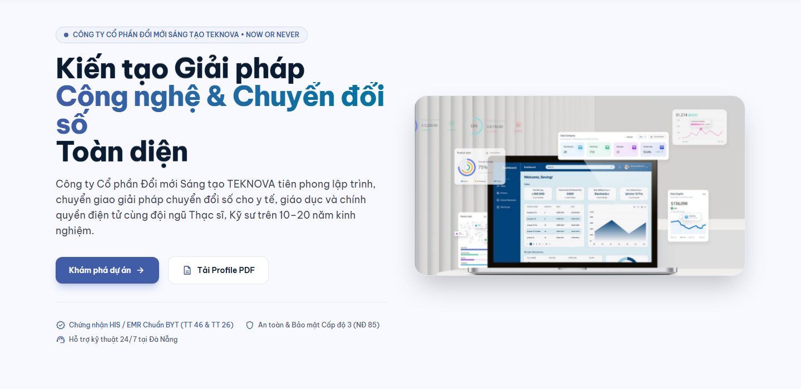
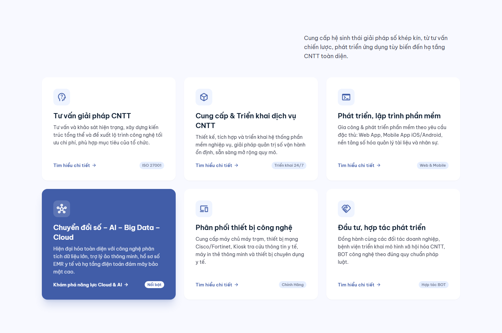
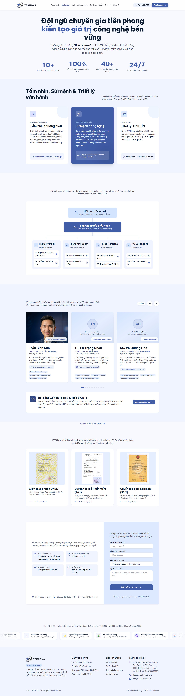

Phần 01
Gợi ý: Kết hợp ưu điểm cả hai
Hero Section & Bảng Điều Phối Y Tế
Nhận xét từ Marketing gửi Dev:
Bản Demo hiện tại làm rất gọn gàng và tải trang rất nhanh. Tuy nhiên khi mang đi thuyết trình trên màn hình lớn, phần Dashboard nếu để lệch 1 bên như bản Demo thì chữ trong bảng số liệu hơi nhỏ. Bản Thiết kế gợi ý cách dàn trang căn giữa (Centered Layout) giúp bảng điều phối EMR mở rộng ra 1200px nhìn rất bề thế.
👉 Đề xuất kết hợp: Giữ nguyên tốc độ tải trang nhanh của bản Demo, đồng thời tham khảo cách bố trí căn giữa và bổ sung thêm nút phụ "Tải Profile PDF" cạnh nút "Khám phá dự án" để tiện cho khách tải tài liệu.
👉 Đề xuất kết hợp: Giữ nguyên tốc độ tải trang nhanh của bản Demo, đồng thời tham khảo cách bố trí căn giữa và bổ sung thêm nút phụ "Tải Profile PDF" cạnh nút "Khám phá dự án" để tiện cho khách tải tài liệu.
BẢN DEMO HIỆN TẠI (TEKNOVA-DEMO)
Bố cục 2 cột gọn gàng, tải nhanh

BẢN THIẾT KẾ THAM KHẢO (TOPAZ)
Căn giữa 1200px, Dashboard thoáng

Phần 02
Gợi ý: Đồng bộ số liệu thực tế
Dải Số Liệu Thành Tựu & Năng Lực
Nhận xét từ Marketing gửi Dev:
Phần này cả hai bên đều có điểm cần hoàn thiện: Bản Demo đang để con số mẫu chung chung (50+ dự án), còn bản Thiết kế gợi ý font số to màu xanh rất đẹp nhưng lại bị lỗi hiển thị biến số thành `00+ Năm, 00+ Dự án`.
👉 Đề xuất kết hợp: Áp dụng font số màu xanh to rõ từ bản Thiết kế, nhưng cập nhật đúng con số có thực tế hồ sơ: `>20 Năm Kinh Nghiệm`, `22+ Dự Án Nghiệm Thu`, `12 Chuyên Gia Nòng Cốt`, `100% Đồng Hành Cam Kết`.
👉 Đề xuất kết hợp: Áp dụng font số màu xanh to rõ từ bản Thiết kế, nhưng cập nhật đúng con số có thực tế hồ sơ: `>20 Năm Kinh Nghiệm`, `22+ Dự Án Nghiệm Thu`, `12 Chuyên Gia Nòng Cốt`, `100% Đồng Hành Cam Kết`.
BẢN DEMO HIỆN TẠI
Số liệu tĩnh font thường

BẢN THIẾT KẾ THAM KHẢO
Kiểu chữ đẹp, cần sửa lỗi hiển thị 00+

Phần 03
Gợi ý: Cập nhật danh sách đối tác thật
Dải Logo Đối Tác & Khách Hàng Cơ Quan
Nhận xét từ Marketing gửi Dev:
Bản Demo hiện tại xếp 2 hàng ngang nhìn rất ngay ngắn. Nhưng để tạo độ sinh động khi trình chiếu, bản Thiết kế làm dạng thanh trượt nhẹ (Marquee) có tính năng rất hay: khi rê chuột vào thì thanh trượt tự dừng lại để người thuyết trình kịp chỉ vào từng đối tác. Về mặt dữ liệu, Marketing đã tải sẵn 11 logo chính thức của các Bệnh viện & Cơ quan đã ký hợp đồng thật (BV Phổi, TTYT Liên Chiểu, Ngũ Hành Sơn, Cẩm Lệ, Chi cục Dân số Đà Nẵng...) trong thư mục `assets/partners/`.
👉 Đề xuất kết hợp: Thay thế các logo mẫu bằng 11 logo thật đã chuẩn bị sẵn, kết hợp hiệu ứng dừng khi rê chuột (pause on hover) của bản Thiết kế.
👉 Đề xuất kết hợp: Thay thế các logo mẫu bằng 11 logo thật đã chuẩn bị sẵn, kết hợp hiệu ứng dừng khi rê chuột (pause on hover) của bản Thiết kế.
BẢN DEMO HIỆN TẠI
2 hàng logo tĩnh

BẢN THIẾT KẾ THAM KHẢO
Dải trượt tự động (Marquee), hover tự dừng

Phần 04
Gợi ý: Tối ưu điểm nhấn thị giác
Khối 6 Lĩnh Vực Hoạt Động Cốt Lõi
Nhận xét từ Marketing gửi Dev:
Phần nội dung 6 lĩnh vực trên bản Demo viết rất chi tiết và chuẩn mực. Tuy nhiên ở bản Demo, ngay phía dưới lại có thêm một khối "Các bài toán TEKNOVA tập trung" với nội dung hơi tương đồng. Trong khi đó, bản Thiết kế gom gọn lại trong 6 thẻ Bento và tạo điểm nhấn mắt nhìn bằng cách phủ màu xanh Cobalt cho Card 4 "Chuyển đổi số - AI - Cloud".
👉 Đề xuất kết hợp: Giữ nguyên văn phong chuẩn của bản Demo, lược bớt khối trùng lặp phía dưới và áp dụng màu xanh điểm nhấn của Card 4 để trang web trông năng động, hiện đại hơn.
👉 Đề xuất kết hợp: Giữ nguyên văn phong chuẩn của bản Demo, lược bớt khối trùng lặp phía dưới và áp dụng màu xanh điểm nhấn của Card 4 để trang web trông năng động, hiện đại hơn.
BẢN DEMO HIỆN TẠI
6 thẻ nền trắng đều màu

BẢN THIẾT KẾ THAM KHẢO
Card 4 màu xanh Cobalt tạo điểm nhấn

Phần 05 • TRỌNG TÂM SHOWCASE
Gợi ý: Bổ sung ảnh chụp thực tế
Dự Án Tiêu Biểu Triển Khai (Bổ Sung Tư Liệu Hình Ảnh)
Nhận xét từ Marketing gửi Dev:
Phần thẻ dự án của bản Demo hiện tại làm bố cục các dòng chữ (Tên dự án, Đơn vị, Tỷ lệ hoàn thành) rất ngay ngắn và logic. Tuy nhiên, khách hàng và hội đồng thẩm định khi nhìn vào thường muốn thấy hình ảnh thực tế triển khai tại hiện trường (bác sĩ đang thao tác phần mềm, màn hình Kiosk đón tiếp, giao diện Zalo OA...). Bản Thiết kế đã chuẩn bị sẵn bộ ảnh minh họa 16:9 rất sinh động.
👉 Đề xuất kết hợp: Giữ nguyên khung nội dung và cấu trúc thẻ của bản Demo, bổ sung thêm phần ảnh thumbnail 16:9 phía trên đầu mỗi thẻ (sử dụng gói ảnh WebP cục bộ đã tối ưu trong assets) để nâng cao độ tin cậy và tính thuyết phục khi đi demo.
👉 Đề xuất kết hợp: Giữ nguyên khung nội dung và cấu trúc thẻ của bản Demo, bổ sung thêm phần ảnh thumbnail 16:9 phía trên đầu mỗi thẻ (sử dụng gói ảnh WebP cục bộ đã tối ưu trong assets) để nâng cao độ tin cậy và tính thuyết phục khi đi demo.
BẢN DEMO HIỆN TẠI (Y: 4111 - 5076px)
Bố cục text chuẩn, chưa có ảnh thumbnail

BẢN THIẾT KẾ THAM KHẢO (Y: 2477 - 3569px)
Đầy đủ ảnh chụp hiện trường sinh động

Phần 06 • NIỀM TIN DOANH NGHIỆP
Gợi ý: Đưa ảnh chân dung & chuẩn hóa tên
Triết Lý Vận Hành & Khối Ban Lãnh Đạo
Nhận xét từ Marketing gửi Dev:
Bản Demo hiện tại thể hiện triết lý "Lấy chữ TÍN làm nền tảng - Thực người, thực việc, thực giá trị" cùng hệ giá trị vận hành 10-20 năm kinh nghiệm và hỗ trợ 24/7 rất đanh thép. Điểm bản Thiết kế làm rất hay là đã bổ sung thêm hình ảnh chân dung cắt nền của lãnh đạo giúp khối này có "gương mặt đại diện", tạo cảm giác người thật việc thật.
👉 Đề xuất kết hợp: Ghép phần ảnh chân dung đã tách nền ([ceo-cutout.png](file:///d:/SonHung/SonHung/teknova-portal/public/ceo-cutout.png)) vào cạnh khối cam kết của bản Demo. Đồng thời lưu ý chuẩn hóa đúng tên lãnh đạo đại diện pháp luật là Trần Bình Sơn (MBA, Kỹ sư Điện tử) theo hồ sơ năng lực và giấy phép ĐKKD.
👉 Đề xuất kết hợp: Ghép phần ảnh chân dung đã tách nền ([ceo-cutout.png](file:///d:/SonHung/SonHung/teknova-portal/public/ceo-cutout.png)) vào cạnh khối cam kết của bản Demo. Đồng thời lưu ý chuẩn hóa đúng tên lãnh đạo đại diện pháp luật là Trần Bình Sơn (MBA, Kỹ sư Điện tử) theo hồ sơ năng lực và giấy phép ĐKKD.
BẢN DEMO HIỆN TẠI (Y: 5077 - 6117px)
Thông điệp chữ Tín & Cam kết 24/7

BẢN THIẾT KẾ THAM KHẢO (Y: 3569 - 5006px)
Có hình ảnh chân dung cắt nền uy tín

Phần 07
Gợi ý: Cập nhật địa chỉ & mã số thuế
Khối Kêu Gọi Hành Động (CTA Banner) & Chân Trang (Footer)
Nhận xét từ Marketing gửi Dev:
Phần Footer của bản Demo trình bày cột liên kết rất ngăn nắp. Ở bản Thiết kế, dải CTA banner đổi sang nền gradient xanh sáng nhìn rất năng động. Về thông tin liên hệ, bản Thiết kế đã bổ sung đầy đủ cả 2 địa chỉ: Văn phòng làm việc chính thức tại Tầng 3, 456 Nguyễn Hữu Thọ (nơi tiếp đối tác) và địa chỉ ĐKKD kèm Mã số thuế 0402300331.
👉 Đề xuất kết hợp: Bổ sung thông tin văn phòng 456 Nguyễn Hữu Thọ và MST vào Footer của bản Demo, có thể cân nhắc đổi màu banner CTA sang tông xanh cobalt sáng như bản Thiết kế nếu thấy phù hợp với tổng thể.
👉 Đề xuất kết hợp: Bổ sung thông tin văn phòng 456 Nguyễn Hữu Thọ và MST vào Footer của bản Demo, có thể cân nhắc đổi màu banner CTA sang tông xanh cobalt sáng như bản Thiết kế nếu thấy phù hợp với tổng thể.
BẢN DEMO HIỆN TẠI (Y: 6117 - 6900px)
Footer ngăn nắp, cần thêm trụ sở chính

BẢN THIẾT KẾ THAM KHẢO (Y: 5006 - 5908px)
Banner xanh sáng, đầy đủ 2 địa chỉ & MST

Phân Tích Chi Tiết 4 Trang Con (Subpages Audit)
Đối Soát Giao Diện & Nội Dung Các Trang Con
Đánh giá chuyên sâu 4 trang nội bộ: Giới Thiệu, Lĩnh Vực Hoạt Động, Dự Án Tiêu Biểu, và Liên Hệ / Đăng Ký Tư Vấn.
Trang Con 01
/gioi-thieu vs ./gioithieu.html
Trang Giới Thiệu (Tầm Nhìn, Sứ Mệnh & Đội Ngũ)
Nhận xét từ Marketing gửi Dev:
Trang Giới thiệu của cả hai bên đều làm rất chỉnh chu về mặt thông điệp (Tầm nhìn, Sứ mệnh, Triết lý chữ TÍN).
• Ưu điểm ở Demo: Có danh sách đội ngũ kỹ sư và sơ đồ cơ cấu tổ chức phân tầng rõ ràng, logic điều hướng tốt.
• Điểm sáng ở Design: Bố trí các khối card sứ mệnh mềm mại, màu sắc hài hòa và có form liên hệ trực tiếp ở chân trang.
👉 Đề xuất kết hợp: Giữ nguyên khung nội dung đầy đủ của Demo, bổ sung thêm ảnh scan bằng cấp của 12 chuyên gia (đã bóc tách từ HSNL Phần B) vào modal xem chi tiết để tăng sức nặng khi cơ quan nhà nước kiểm tra năng lực nhân sự.
• Ưu điểm ở Demo: Có danh sách đội ngũ kỹ sư và sơ đồ cơ cấu tổ chức phân tầng rõ ràng, logic điều hướng tốt.
• Điểm sáng ở Design: Bố trí các khối card sứ mệnh mềm mại, màu sắc hài hòa và có form liên hệ trực tiếp ở chân trang.
👉 Đề xuất kết hợp: Giữ nguyên khung nội dung đầy đủ của Demo, bổ sung thêm ảnh scan bằng cấp của 12 chuyên gia (đã bóc tách từ HSNL Phần B) vào modal xem chi tiết để tăng sức nặng khi cơ quan nhà nước kiểm tra năng lực nhân sự.
BẢN DEMO (/gioi-thieu)

BẢN THIẾT KẾ (gioithieu.html)

Trang Con 02
/linh-vuc-hoat-dong vs ./lichvuc.html
Trang Lĩnh Vực Hoạt Động & Giải Pháp Chuyên Sâu
Nhận xét từ Marketing gửi Dev:
Trang Lĩnh vực là nơi thể hiện năng lực công nghệ lõi:
• Ưu điểm ở Demo: Có khối "Quy trình triển khai 4 bước chuẩn mực" (Khảo sát -> Kiến trúc -> Lập trình -> Bàn giao vận hành) rất thực tế, giúp đối tác hình dung cách Teknova làm việc.
• Điểm sáng ở Design: 4 trụ cột công nghệ (Smart EMR, Phát triển phần mềm theo yêu cầu, AI & Big Data Cloud, Phân phối thiết bị) được phân tách thành các khối lớn riêng biệt với badge công nghệ và thông số cam kết rất rõ ràng.
👉 Đề xuất kết hợp: Sử dụng bố cục phân tách 4 trụ cột của bản Design, giữ lại khối quy trình 4 bước của bản Demo, bổ sung thêm các cam kết chuẩn Bộ Y tế (Thông tư 46, QĐ 3176, Cấp độ 3 ATTT).
• Ưu điểm ở Demo: Có khối "Quy trình triển khai 4 bước chuẩn mực" (Khảo sát -> Kiến trúc -> Lập trình -> Bàn giao vận hành) rất thực tế, giúp đối tác hình dung cách Teknova làm việc.
• Điểm sáng ở Design: 4 trụ cột công nghệ (Smart EMR, Phát triển phần mềm theo yêu cầu, AI & Big Data Cloud, Phân phối thiết bị) được phân tách thành các khối lớn riêng biệt với badge công nghệ và thông số cam kết rất rõ ràng.
👉 Đề xuất kết hợp: Sử dụng bố cục phân tách 4 trụ cột của bản Design, giữ lại khối quy trình 4 bước của bản Demo, bổ sung thêm các cam kết chuẩn Bộ Y tế (Thông tư 46, QĐ 3176, Cấp độ 3 ATTT).
BẢN DEMO (/linh-vuc-hoat-dong)

BẢN THIẾT KẾ (lichvuc.html)

Trang Con 03 • ĐIỂM SÁNG SHOWCASE
/du-an vs ./duan.html
Trang Dự Án Tiêu Biểu (Danh Mục 22 Hợp Đồng Nghiệm Thu)
Nhận xét từ Marketing gửi Dev:
Đây là trang quan trọng nhất khi đi đấu thầu và chào giải pháp:
• Ưu điểm ở Demo: Có bộ lọc tab (Filter: Tất cả, Y tế, Dân số, Zalo OA...) và hiển thị các chỉ số đo lường như "100% không dùng bệnh án giấy", "Giảm 65% thời gian xử lý" rất chuyên nghiệp.
• Điểm sáng ở Design: Nạp đầy đủ tên chính xác của các đơn vị thực tế (BV Phổi, TTYT Ngũ Hành Sơn, TTYT Liên Chiểu, TTYT Cẩm Lệ, BV Phụ sản - Nhi, Cloud ACE, PVcomBank, MobiFone) và ghi rõ năm triển khai (2024 - 2025).
👉 Đề xuất kết hợp: Giữ nguyên bộ lọc tab thông minh của Demo, nạp danh sách 22 hợp đồng thực tế từ bản Design (đã khớp 1-1 với HSNL 2026), và hỗ trợ tính năng click mở Drawer xem chi tiết bài toán - giải pháp - kết quả nghiệm thu.
• Ưu điểm ở Demo: Có bộ lọc tab (Filter: Tất cả, Y tế, Dân số, Zalo OA...) và hiển thị các chỉ số đo lường như "100% không dùng bệnh án giấy", "Giảm 65% thời gian xử lý" rất chuyên nghiệp.
• Điểm sáng ở Design: Nạp đầy đủ tên chính xác của các đơn vị thực tế (BV Phổi, TTYT Ngũ Hành Sơn, TTYT Liên Chiểu, TTYT Cẩm Lệ, BV Phụ sản - Nhi, Cloud ACE, PVcomBank, MobiFone) và ghi rõ năm triển khai (2024 - 2025).
👉 Đề xuất kết hợp: Giữ nguyên bộ lọc tab thông minh của Demo, nạp danh sách 22 hợp đồng thực tế từ bản Design (đã khớp 1-1 với HSNL 2026), và hỗ trợ tính năng click mở Drawer xem chi tiết bài toán - giải pháp - kết quả nghiệm thu.
BẢN DEMO (/du-an) - Có bộ lọc Tab


BẢN THIẾT KẾ (duan.html) - Đầy đủ đối tác thật


Trang Con 04
/lien-he vs ./gioithieu.html#lien-he
Trang Liên Hệ & Tiếp Nhận Y Cầu Khảo Sát
Nhận xét từ Marketing gửi Dev:
• Ưu điểm ở Demo: Có hẳn một trang `/lien-he` riêng biệt với Form gửi yêu cầu đầy đủ các trường (Họ tên, SĐT, Email, Cơ quan/Đơn vị, Lĩnh vực quan tâm, Nội dung) và có hotline `0935 722 579`.
• Điểm sáng ở Design: Form ở Design tích hợp sẵn cam kết phản hồi trong 24 giờ và phân loại rõ cơ sở y tế (Bệnh viện Hạng I, Hạng II, TTYT, Trạm y tế).
👉 Đề xuất kết hợp: Giữ nguyên trang `/lien-he` độc lập rất tiện lợi của Demo, bổ sung thêm địa chỉ văn phòng làm việc Tầng 3, 456 Nguyễn Hữu Thọ và thêm trường chọn phân hạng cơ sở y tế để tiện phân loại khách hàng B2G.
• Ưu điểm ở Demo: Có hẳn một trang `/lien-he` riêng biệt với Form gửi yêu cầu đầy đủ các trường (Họ tên, SĐT, Email, Cơ quan/Đơn vị, Lĩnh vực quan tâm, Nội dung) và có hotline `0935 722 579`.
• Điểm sáng ở Design: Form ở Design tích hợp sẵn cam kết phản hồi trong 24 giờ và phân loại rõ cơ sở y tế (Bệnh viện Hạng I, Hạng II, TTYT, Trạm y tế).
👉 Đề xuất kết hợp: Giữ nguyên trang `/lien-he` độc lập rất tiện lợi của Demo, bổ sung thêm địa chỉ văn phòng làm việc Tầng 3, 456 Nguyễn Hữu Thọ và thêm trường chọn phân hạng cơ sở y tế để tiện phân loại khách hàng B2G.
BẢN DEMO (/lien-he) - Form riêng biệt hoàn chỉnh

BẢN THIẾT KẾ (gioithieu.html#lien-he)
